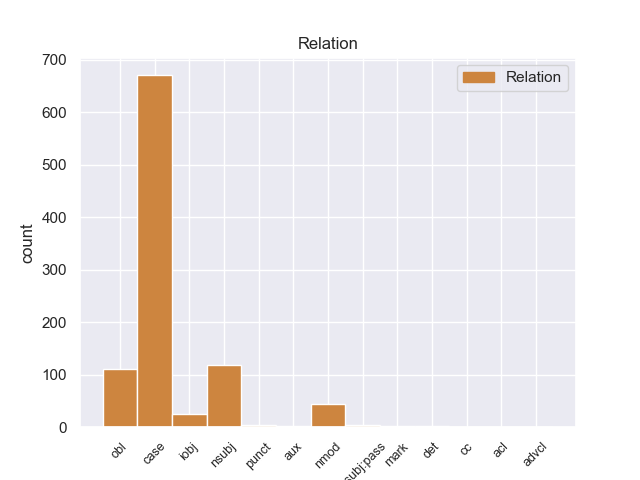
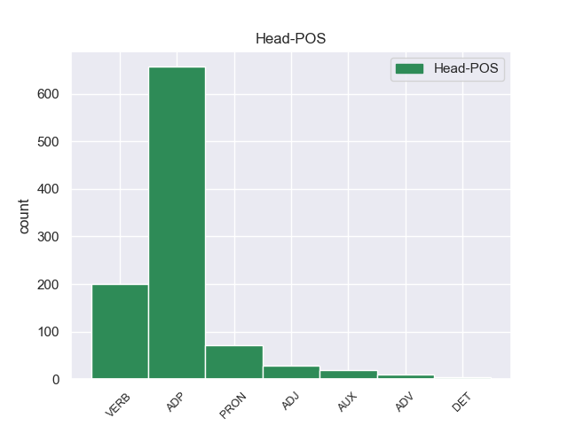
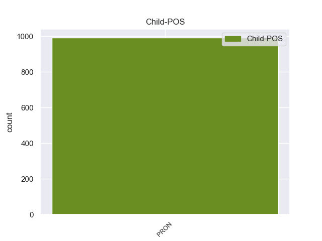

Distribution of features within this leaf



Agreement Rules sorted by frequency.
- When the dependent token is the adjectival modifier(amod) of the head token, and the head token is ADJ and the dependent token is ADJ.
1 ७० _ _ _ _ 0 _ _ _
2 वर्षीय _ _ _ _ 0 _ _ _
3 इस _ _ _ _ 0 _ _ _
4 अहिंसावादी अहिंसावादी ADJ -- Case=Acc 0 _ _ _
5 तिब्बती तिब्बती ADJ -- Case=Acc 4 amod _ _
6 नेता _ _ _ _ 0 _ _ _
7 ने _ _ _ _ 0 _ _ _
8 यह _ _ _ _ 0 _ _ _
9 भी _ _ _ _ 0 _ _ _
10 कहा _ _ _ _ 0 _ _ _
11 कि _ _ _ _ 0 _ _ _
12 वे _ _ _ _ 0 _ _ _
13 चीन _ _ _ _ 0 _ _ _
14 से _ _ _ _ 0 _ _ _
15 अलगाव _ _ _ _ 0 _ _ _
16 की _ _ _ _ 0 _ _ _
17 बात _ _ _ _ 0 _ _ _
18 नहीं _ _ _ _ 0 _ _ _
19 कर _ _ _ _ 0 _ _ _
20 रहे _ _ _ _ 0 _ _ _
21 हैं _ _ _ _ 0 _ _ _
22 बल्कि _ _ _ _ 0 _ _ _
23 वे _ _ _ _ 0 _ _ _
24 तो _ _ _ _ 0 _ _ _
25 चीनी _ _ _ _ 0 _ _ _
26 संविधान _ _ _ _ 0 _ _ _
27 के _ _ _ _ 0 _ _ _
28 दायरे _ _ _ _ 0 _ _ _
29 में _ _ _ _ 0 _ _ _
30 ही _ _ _ _ 0 _ _ _
31 तिब्बत _ _ _ _ 0 _ _ _
32 समस्या _ _ _ _ 0 _ _ _
33 का _ _ _ _ 0 _ _ _
34 हल _ _ _ _ 0 _ _ _
35 चाहते _ _ _ _ 0 _ _ _
36 हैं _ _ _ _ 0 _ _ _
37 । _ _ _ _ 0 _ _ _
1 दूसरी दूसरा ADJ -- Case=Nom|Gender=Fem|Number=Sing|NumType=Ord 2 amod _ _
2 ओर ओर ADV -- AdpType=Post|Case=Nom|Gender=Fem|Number=Sing|Person=3 0 _ _ _
3 पाकिस्तान _ _ _ _ 0 _ _ _
4 भारत _ _ _ _ 0 _ _ _
5 को _ _ _ _ 0 _ _ _
6 इस _ _ _ _ 0 _ _ _
7 परियोजना _ _ _ _ 0 _ _ _
8 की _ _ _ _ 0 _ _ _
9 सुरक्षा _ _ _ _ 0 _ _ _
10 का _ _ _ _ 0 _ _ _
11 आश्वासन _ _ _ _ 0 _ _ _
12 देता _ _ _ _ 0 _ _ _
13 रहा _ _ _ _ 0 _ _ _
14 है _ _ _ _ 0 _ _ _
15 । _ _ _ _ 0 _ _ _
1 राष्ट्रपति _ _ _ _ 0 _ _ _
2 मुशर्रफ _ _ _ _ 0 _ _ _
3 ने _ _ _ _ 0 _ _ _
4 पकड़े _ _ _ _ 0 _ _ _
5 गए _ _ _ _ 0 _ _ _
6 आतंकी _ _ _ _ 0 _ _ _
7 का _ _ _ _ 0 _ _ _
8 नाम _ _ _ _ 0 _ _ _
9 नहीं _ _ _ _ 0 _ _ _
10 बताया _ _ _ _ 0 _ _ _
11 लेकिन _ _ _ _ 0 _ _ _
12 ' _ _ _ _ 0 _ _ _
13 द _ _ _ _ 0 _ _ _
14 पाकिस्तान _ _ _ _ 0 _ _ _
15 अब्जर्वर _ _ _ _ 0 _ _ _
16 ' _ _ _ _ 0 _ _ _
17 नामक _ _ _ _ 0 _ _ _
18 दैनिक _ _ _ _ 0 _ _ _
19 ने _ _ _ _ 0 _ _ _
20 एक _ _ _ _ 0 _ _ _
21 अधिकारी _ _ _ _ 0 _ _ _
22 के _ _ _ _ 0 _ _ _
23 हवाले _ _ _ _ 0 _ _ _
24 से _ _ _ _ 0 _ _ _
25 लिखा _ _ _ _ 0 _ _ _
26 है _ _ _ _ 0 _ _ _
27 कि _ _ _ _ 0 _ _ _
28 यह _ _ _ _ 0 _ _ _
29 और और ADJ -- Case=Nom 30 amod _ _
30 कोई कोई PRON -- Case=Nom|Number=Sing|Person=3|PronType=Prs 0 _ _ _
31 नहीं _ _ _ _ 0 _ _ _
32 कुख्यात _ _ _ _ 0 _ _ _
33 अहमद _ _ _ _ 0 _ _ _
34 खलफान _ _ _ _ 0 _ _ _
35 घैलानी _ _ _ _ 0 _ _ _
36 है _ _ _ _ 0 _ _ _
37 । _ _ _ _ 0 _ _ _
1 अंबानी _ _ _ _ 0 _ _ _
2 ने _ _ _ _ 0 _ _ _
3 कहा _ _ _ _ 0 _ _ _
4 कि _ _ _ _ 0 _ _ _
5 कंपनी _ _ _ _ 0 _ _ _
6 तेल _ _ _ _ 0 _ _ _
7 व _ _ _ _ 0 _ _ _
8 गैस _ _ _ _ 0 _ _ _
9 खोजने _ _ _ _ 0 _ _ _
10 के _ _ _ _ 0 _ _ _
11 मद _ _ _ _ 0 _ _ _
12 में _ _ _ _ 0 _ _ _
13 अगले अगला ADJ -- Case=Acc|Gender=Masc|Number=Plur 14 amod _ _
14 24 24 NUM -- Case=Acc|NumType=Card 0 _ _ _
15 से _ _ _ _ 0 _ _ _
16 30 _ _ _ _ 0 _ _ _
17 महीनों _ _ _ _ 0 _ _ _
18 में _ _ _ _ 0 _ _ _
19 2,500 _ _ _ _ 0 _ _ _
20 करोड़ _ _ _ _ 0 _ _ _
21 रुपये _ _ _ _ 0 _ _ _
22 और _ _ _ _ 0 _ _ _
23 निवेश _ _ _ _ 0 _ _ _
24 करेगी _ _ _ _ 0 _ _ _
25 । _ _ _ _ 0 _ _ _
Disagree Examples:
1 उन्होंने _ _ _ _ 0 _ _ _
2 उम्मीद _ _ _ _ 0 _ _ _
3 जताई _ _ _ _ 0 _ _ _
4 कि _ _ _ _ 0 _ _ _
5 अब _ _ _ _ 0 _ _ _
6 तीन _ _ _ _ 0 _ _ _
7 दशक _ _ _ _ 0 _ _ _
8 से _ _ _ _ 0 _ _ _
9 लंबित लंबित ADJ -- Case=Nom 10 amod _ _
10 उनकी वह PRON -- Case=Acc,Gen|Gender=Fem|Number=Sing|Person=3|Polite=Form|Poss=Yes|PronType=Prs 0 _ _ _
11 पेंशन _ _ _ _ 0 _ _ _
12 उन्हें _ _ _ _ 0 _ _ _
13 ज़रूर _ _ _ _ 0 _ _ _
14 मिल _ _ _ _ 0 _ _ _
15 जाएगी _ _ _ _ 0 _ _ _
16 . _ _ _ _ 0 _ _ _
1 शनिवार _ _ _ _ 0 _ _ _
2 को _ _ _ _ 0 _ _ _
3 मुख्य मुख्य ADJ -- Case=Nom 0 _ _ _
4 न्यायिक न्यायिक ADJ -- Case=Acc 3 amod _ _
5 मजिस्ट्रेट _ _ _ _ 0 _ _ _
6 शशिकांत _ _ _ _ 0 _ _ _
7 उपाध्याय _ _ _ _ 0 _ _ _
8 ने _ _ _ _ 0 _ _ _
9 सपा _ _ _ _ 0 _ _ _
10 प्रत्याशी _ _ _ _ 0 _ _ _
11 शिशुपाल _ _ _ _ 0 _ _ _
12 सिंह _ _ _ _ 0 _ _ _
13 यादव _ _ _ _ 0 _ _ _
14 की _ _ _ _ 0 _ _ _
15 हत्या _ _ _ _ 0 _ _ _
16 के _ _ _ _ 0 _ _ _
17 प्रयास _ _ _ _ 0 _ _ _
18 तथा _ _ _ _ 0 _ _ _
19 कई _ _ _ _ 0 _ _ _
20 मतदान _ _ _ _ 0 _ _ _
21 केंद्रों _ _ _ _ 0 _ _ _
22 में _ _ _ _ 0 _ _ _
23 मतपेटियों _ _ _ _ 0 _ _ _
24 में _ _ _ _ 0 _ _ _
25 पानी _ _ _ _ 0 _ _ _
26 व _ _ _ _ 0 _ _ _
27 स्याही _ _ _ _ 0 _ _ _
28 डालने _ _ _ _ 0 _ _ _
29 के _ _ _ _ 0 _ _ _
30 आरोप _ _ _ _ 0 _ _ _
31 में _ _ _ _ 0 _ _ _
32 भाजपा _ _ _ _ 0 _ _ _
33 सांसद _ _ _ _ 0 _ _ _
34 , _ _ _ _ 0 _ _ _
35 उनके _ _ _ _ 0 _ _ _
36 गनर _ _ _ _ 0 _ _ _
37 शिवकरन _ _ _ _ 0 _ _ _
38 सिंह _ _ _ _ 0 _ _ _
39 तथा _ _ _ _ 0 _ _ _
40 दिरावटी _ _ _ _ 0 _ _ _
41 से _ _ _ _ 0 _ _ _
42 भाजपा _ _ _ _ 0 _ _ _
43 के _ _ _ _ 0 _ _ _
44 जिला _ _ _ _ 0 _ _ _
45 पंचायत _ _ _ _ 0 _ _ _
46 सदस्य _ _ _ _ 0 _ _ _
47 प्रत्याशी _ _ _ _ 0 _ _ _
48 बिहारीलाल _ _ _ _ 0 _ _ _
49 उर्फ _ _ _ _ 0 _ _ _
50 मुलायम _ _ _ _ 0 _ _ _
51 सिंह _ _ _ _ 0 _ _ _
52 निरंजन _ _ _ _ 0 _ _ _
53 के _ _ _ _ 0 _ _ _
54 विरूद्ध _ _ _ _ 0 _ _ _
55 गैरजमानती _ _ _ _ 0 _ _ _
56 वारंट _ _ _ _ 0 _ _ _
57 जारी _ _ _ _ 0 _ _ _
58 किया _ _ _ _ 0 _ _ _
59 था _ _ _ _ 0 _ _ _
60 । _ _ _ _ 0 _ _ _
1 यूस्टन _ _ _ _ 0 _ _ _
2 भूमिगत _ _ _ _ 0 _ _ _
3 स्टेशन _ _ _ _ 0 _ _ _
4 पर _ _ _ _ 0 _ _ _
5 सबसे सबसे ADJ -- Case=Acc 6 amod _ _
6 पहले पहले ADV -- AdpType=Post|Case=Nom|Gender=Masc|Number=Sing|Person=3 0 _ _ _
7 खतरे _ _ _ _ 0 _ _ _
8 की _ _ _ _ 0 _ _ _
9 घंटी _ _ _ _ 0 _ _ _
10 बजी _ _ _ _ 0 _ _ _
11 । _ _ _ _ 0 _ _ _
1 असम _ _ _ _ 0 _ _ _
2 के _ _ _ _ 0 _ _ _
3 मुख्यमंत्री _ _ _ _ 0 _ _ _
4 तरुण _ _ _ _ 0 _ _ _
5 गोगोई _ _ _ _ 0 _ _ _
6 ने _ _ _ _ 0 _ _ _
7 कहा _ _ _ _ 0 _ _ _
8 कि _ _ _ _ 0 _ _ _
9 राज्य _ _ _ _ 0 _ _ _
10 से _ _ _ _ 0 _ _ _
11 उग्रवाद _ _ _ _ 0 _ _ _
12 की _ _ _ _ 0 _ _ _
13 समस्या _ _ _ _ 0 _ _ _
14 समाप्त _ _ _ _ 0 _ _ _
15 कर _ _ _ _ 0 _ _ _
16 शांति _ _ _ _ 0 _ _ _
17 स्थापित _ _ _ _ 0 _ _ _
18 करने _ _ _ _ 0 _ _ _
19 के _ _ _ _ 0 _ _ _
20 लिए _ _ _ _ 0 _ _ _
21 केंद्र _ _ _ _ 0 _ _ _
22 और _ _ _ _ 0 _ _ _
23 राज्य _ _ _ _ 0 _ _ _
24 सरकार _ _ _ _ 0 _ _ _
25 प्रतिबंधित प्रतिबंधित ADJ -- Case=Nom 0 _ _ _
26 उग्रवादी उग्रवादी ADJ -- Case=Acc 25 amod _ _
27 संगठन _ _ _ _ 0 _ _ _
28 उल्फा _ _ _ _ 0 _ _ _
29 से _ _ _ _ 0 _ _ _
30 सीधी _ _ _ _ 0 _ _ _
31 बात _ _ _ _ 0 _ _ _
32 करने _ _ _ _ 0 _ _ _
33 के _ _ _ _ 0 _ _ _
34 पक्ष _ _ _ _ 0 _ _ _
35 में _ _ _ _ 0 _ _ _
36 हैं _ _ _ _ 0 _ _ _
37 । _ _ _ _ 0 _ _ _
1 उन्होंने _ _ _ _ 0 _ _ _
2 अमेरिका _ _ _ _ 0 _ _ _
3 से _ _ _ _ 0 _ _ _
4 यह _ _ _ _ 0 _ _ _
5 अपील _ _ _ _ 0 _ _ _
6 भी _ _ _ _ 0 _ _ _
7 की _ _ _ _ 0 _ _ _
8 कि _ _ _ _ 0 _ _ _
9 वह _ _ _ _ 0 _ _ _
10 पाकिस्तान _ _ _ _ 0 _ _ _
11 को _ _ _ _ 0 _ _ _
12 एक _ _ _ _ 0 _ _ _
13 जिम्मेदार _ _ _ _ 0 _ _ _
14 परमाणु परमाणु ADJ -- Case=Nom|Gender=Masc|Number=Sing|Person=3 16 amod _ _
15 शक्ति _ _ _ _ 0 _ _ _
16 संपन्न संपन्न ADJ -- Case=Acc 0 _ _ _
17 राष्ट्र _ _ _ _ 0 _ _ _
18 की _ _ _ _ 0 _ _ _
19 मान्यता _ _ _ _ 0 _ _ _
20 दे _ _ _ _ 0 _ _ _
21 । _ _ _ _ 0 _ _ _